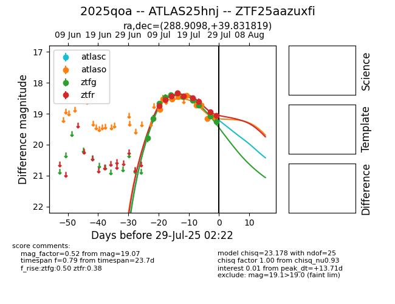

Target 2025qoa at 2025-07-29 02:22, see:
FINK: fink-portal.org/2025qoa
Lasair: lasair-ztf.lsst.ac.uk/objects/2025qoa
ALeRCE: alerce.online/object/2025qoa
TNS: wis-tns.org/object/2025qoa
YSE: ziggy.ucolick.org/yse/transient_detail/2025qoa
alt names
ZTF25aazuxfi (ztf,fink)
2025qoa (tns,yse)
ATLAS25hnj (atlas)
coordinates:
equatorial (ra, dec) = (288.9098,+39.83182)
galactic (l, b) = (71.4109,+12.71127)
photometry
last atlasc=18.69, atlaso=19.10, ztfg=19.25, ztfr=19.07
1 atlasc, 9 atlaso, 11 ztfg, 9 ztfr detections
